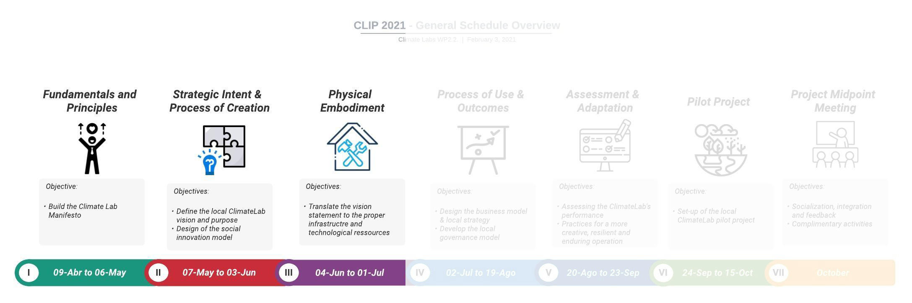

Sprint 3 Physical Embodiment
3.1 Sprint Opening
knitr::include_graphics('Figures/CLIP-global-03.jpg')
Welcome to the third sprint of the CLIP. In this sprint we are going to focus on the Physical Embodiment of the Climate Labs.
GOAL
The goal of the sprint 3 is:
To translate the Climate Lab’s vision into a technological resource roadmap
Sprint dates: From May 28 to July 1 / 2021
A webinar will be held on May 28 to officially launch the Sprint III. It will be a synchronous session, so all CLT are expected to attend. As usual, a series of content and activities are proposed to the CLT to be completed during the course of the sprint:
First, three conceptual videos are proposed to introduce the notion of technological resource management and, further, to have a wider view of the different manifestation of social innovation labs across the world.
Second, two case experiences from members of the consortium are shared. This way we can learn a little more about the experience of each of our partners.
Finally, you will find the link to the team workshop of this sprint. The workshop should be completed before the end of the sprint (July 1).
NOTICE!
The full recording of the webinar can be watched below.
knitr::include_url("https://www.youtube.com/embed/1iFji4RRLUg")3.2 Conceptual Videos
3.2.1 Background on Physical Embodiment
The materialization of an innovation lab itself encompasses all the characteristics of the physical (or virtual) environment. The design of the space varies significantly, with different design values and degrees of flexibility; also, the way the space evolves needs to be contemplated. Different innovation labs contain diverse levels of physical resources, from IT infrastructure, support of prototyping and visualization to the furniture. Each setup is realized based on specific constraints such as resources, space, skills and time (Osorio et al. 2019). In this sense, one should always think about the physical embodiment of an innovation lab in terms of its use, creation and intentions. This means that a lab that seeks to foster teamwork should probably prioritize flexible workspaces and social areas, while another that aims to generate radical ideas may emphasize playfulness along with the provision of multiple sources of inspiration (Moultrie et al. 2007; Klooker et al. 2018).
The following are some of the aspects commonly considered to guide the physical embodiment of innovation labs (Osorio et al. 2019; Moultrie et al. 2007):
| Criteria | Description |
|---|---|
| Geographic Location | The physical location of the environment and its relationship with the organization. This can include the organization’s own in-house space up to external third-party facilities. |
| Scale | The physical scale of the environment. |
| Real vs Virtual | The degree to which the space is designed around virtual teamwork and communication. |
| Flexibility | The degree of flexibility of the space to enable alternative configurations and uses. The degree of flexibility/reconfigurability of resources in the workspace. |
| Design Values | Specific design values targeted at encouraging specific behaviors. The use of imagery to reinforce actions. |
| IT Resources | The role of IT to enable group work, activities and processes. |
| Data & Information | The availability of local data/information to support innovation, creativity or design processes/activities. |
| Prototyping & Visualization | Availability of equipment, facilities and tools to support modeling and visualization activities as a core component of creative and design processes. |
| Constraints | Practical constraints on the design of the environment |
| Evolution | The degree to which evolution is planned to meet future goals. |
3.2.2 Why to develop a Technological Strategy for our Climate Labs? - Mauricio Camargo
knitr::include_url("https://www.youtube.com/embed/piyG1Pau7f0")Professor Mauricio Camargo from Université de Lorraine explains the concept of Management of Technological Resources as a means to identify the critical assets, capabilities and infrastructure for the sustainability of the Climate Labs. This prospective approach is instrumental in rapidly changing environments with a great deal of uncertainty. To know more about this approach you can have a look to the paper (Boly, Camargo, and Marche 2018; Marche, Boly, and Camargo 2017).
The Spanish version of this video can be accessed here.
3.2.4 Implementing Innovation Spaces: The case of Hotmilk at PUCPR - Fernando Luciano & André Turbay
knitr::include_url("https://www.youtube.com/embed/hpQ1mMiRXVw")In this video, Professor Fernando Luciano, Director of HotMilk the Innovation Ecosystem at PUCPR, discusses the conditions, challenges and concepts underlying the decision-making that led to the HotMilk space. We present this experience as a way to contribute ideas and possibilities for the ClimateLabs structures.
3.3 Case Experiences
3.3.1 Ashoka Mexico – Gabriela Carrasco
knitr::include_url("https://www.youtube.com/embed/LBRmMsdUqBk")Gabriela Carrasco from Ashoka Mexico presents the experience of the Social Innovation Center at the Universidad de Aysén in the Chilean Patagonia. This is one of the more than 40 university initiatives that have participated in Ashoka Commons, a program to accelerate university projects in social innovation.
3.3.2 Instituto Tecnológico de Monterrey Campus Guadalajara – Sebastián Gradilla y Diego Díaz
knitr::include_url("https://www.youtube.com/embed/OLYeF9icR-k")Professor Sebastián Gradilla and master’s student Diego Díaz of the Instituto Tecnológico de Monterrey Campus Guadalajara explain the role of the Sustainability and Climate Change Laboratory in addressing the challenges of agro-industrial waste management in the Jalisco region of Mexico.
3.4 Team Workshop 4
Below you can find for each University the link to workshop for the Sprint III:
Colombia
Universidad de Caldas: Workshop 4 - Bonus
Universidad del Quindio: Workshop 4 - Bonus
Universidad de Manizales: Workshop 4 - Bonus
Universidad Tecnológica de Pereira: Workshop 4 - Bonus
Corporacion Universitaria Minuto de Dios: Workshop 4 - Bonus
Mexico
Instituto Tecnológico y Estudios Superiores de Monterrey: Workshop 4 - Bonus
Universidad de Guadalajara: Workshop 4 - Bonus
Brazil
Pontifícia Universidade Católica do Rio Grande do Sul: Workshop 4 - Bonus
Pontifícia Universidade Católica Do Paraná: Workshop 4 - Bonus
Universidade Católica de Pernambuco: Workshop 4 - Bonus
3.5 Let us know your comments
In this section, you can put any comments/questions or share your thoughts and feedback about this sprint. To insert new text, use the “Edit” button.